Are you ever spending a nice evening browsing Twitter, then you realise half the posts you're seeing are the same formats copied and pasted format over and over again. Déjà vu strike again! You're going crazy!

Twitter is actually a hellhole I only use it because it's funny occasionally... and since it's still miles better than Instagram.
COPY AND PASTE CONSPIRACY
Like above, there's an eerie amount of copied posts. Are these bots? Or poor unoriginal people...? Hard to tell.
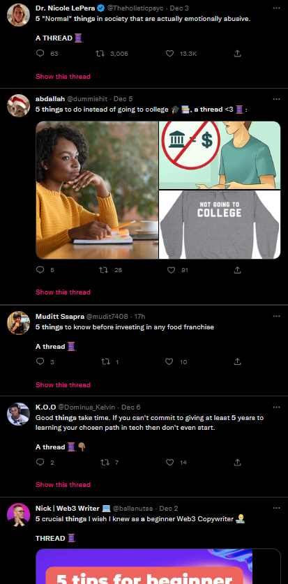
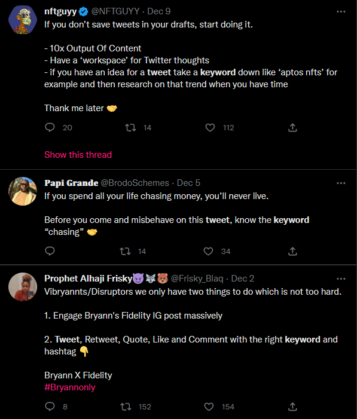
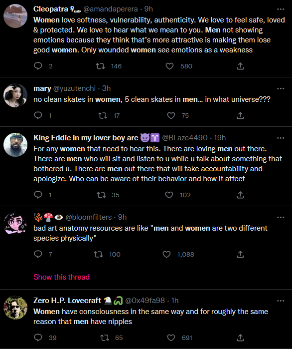
Maybe it's a conspiracy! Maybe a really drawn-out scam...
Regardless people love complaining about virtually nothing of importance! Like men arguing with women... actually that's really sad- DO YOU NOT HAVE JOBS? FAMILIES? FRIENDS OR HOBBIES?
Racism or Something??
Been seeing people argue over the race of 'meme' or 'funny' Twitter pages.
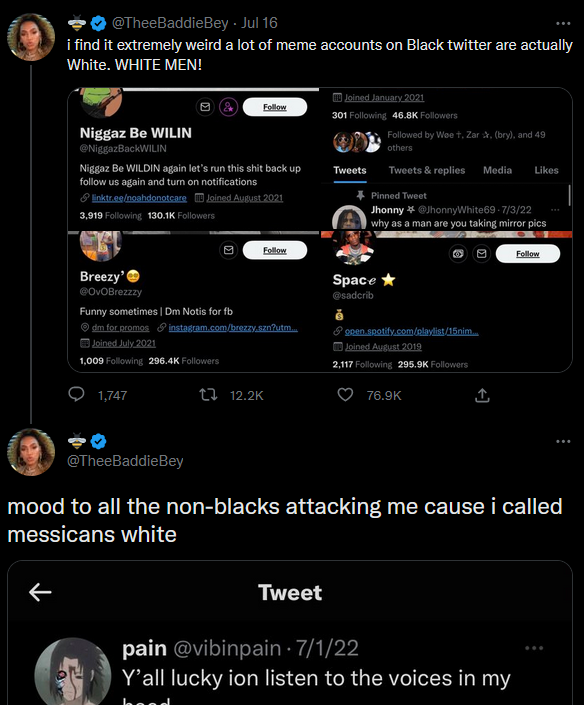
Going to demolish your whole demeanor based of what you post on the shill-filled joke account.
I don't understand internet race wars so let's ignore this. Also the comments are still arguing! You people are never happy I swear.
Posting W's and L's
These are accounts that post the 'wins' and 'losses' of other people and internet users. They're normally grim and regularly fall for obvious satire/bait from other accounts... perhaps to ignite frustration in the comments... to get more likes...?
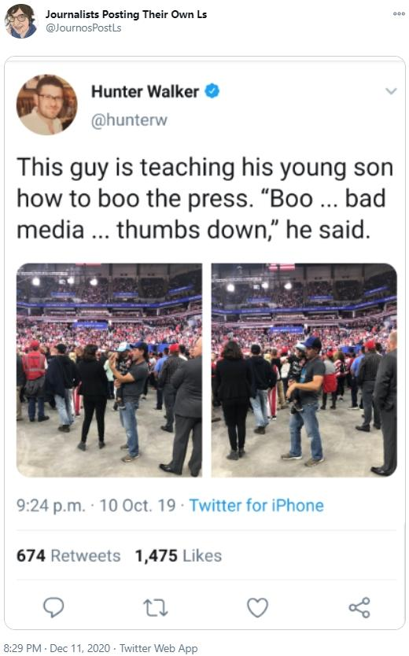
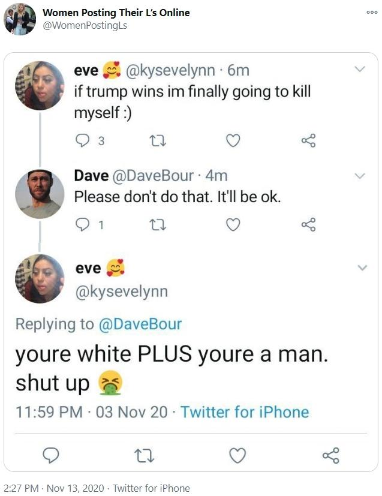
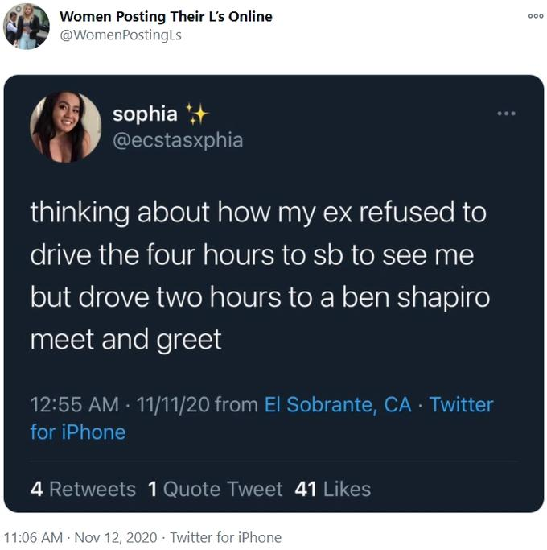
It's a cycle, mostly of just posting things others people say that you disagree with! Ultimately, these are just 'takes' accounts.
There's always posting W's too!
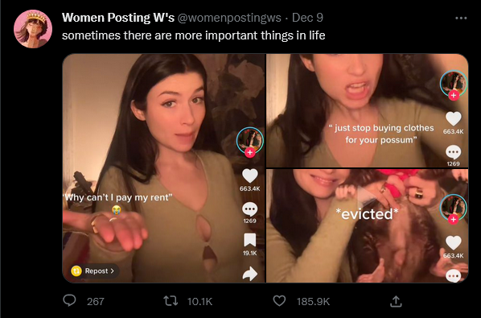
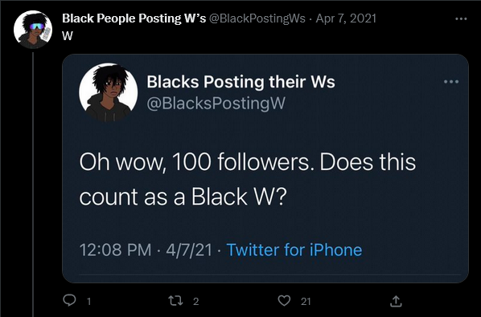
Reminds me of typical posts you'd see on Facebook actually.
I know it could sound pessimistic, but lots of these accounts create more division between communities online... maybe it's just the nature of these types of accounts.
I don't it should be necessary to validate your 'group' or 'community' based on the actions of other people you'll never know- looking after those around you and yourself will be enough!
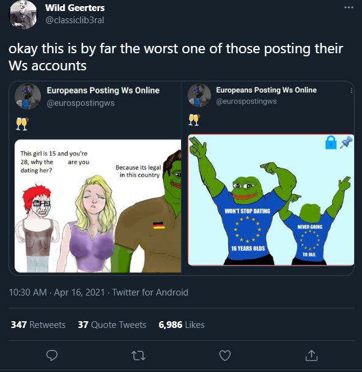
Never mind!
Promotion and T-Shirts
At some point, lots of accounts were posting seemingly normal photos of strange t-shirts, attached with a promotion to buy that exact t-shirt in the replies.
Some people would call this 'breaking character', some... just a scam.
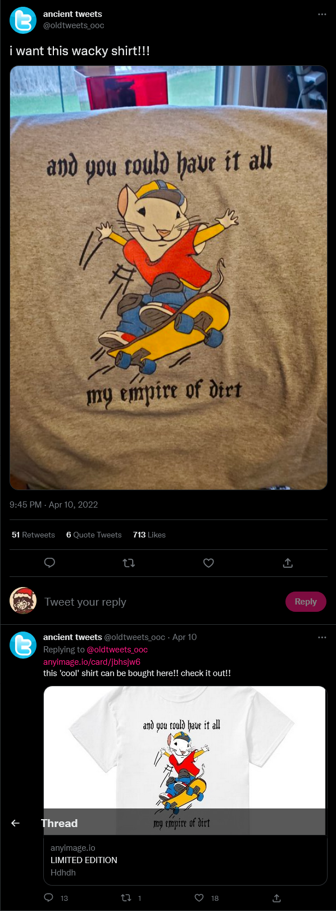
(I tried to find more examples but all the tweets deleted, or the accounts suspended... hmmm...)
People clearly don't like it either way!
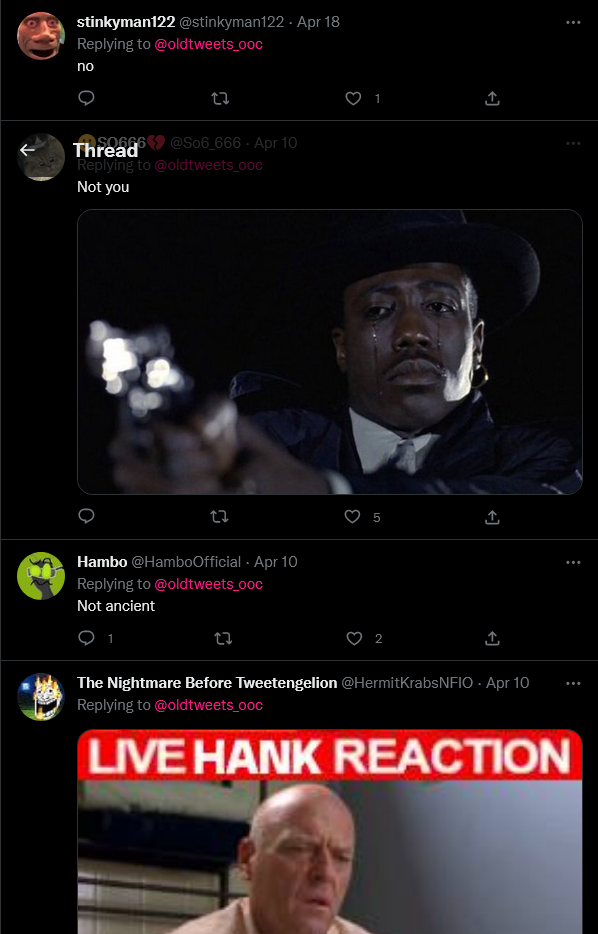
Is this, in reality, a convoluted form of online marketing? Are all 'comedy' Twitter accounts ran by companies to slowly promote themselves? Is it a conspiracy...!!!!??!?!
Also popular accounts seem to have a habit of promoting... 'certain' types of material by liking or retweeting these 'certain' posts.